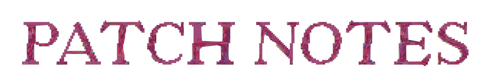
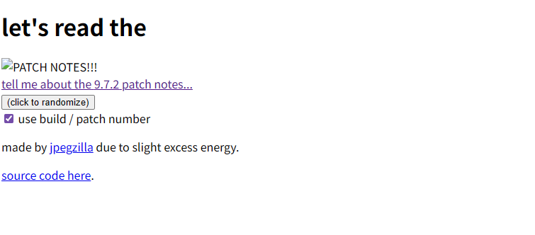
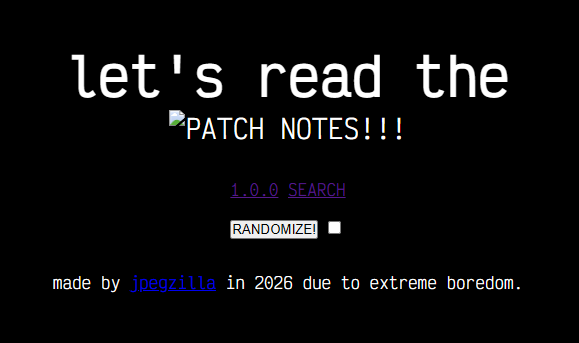
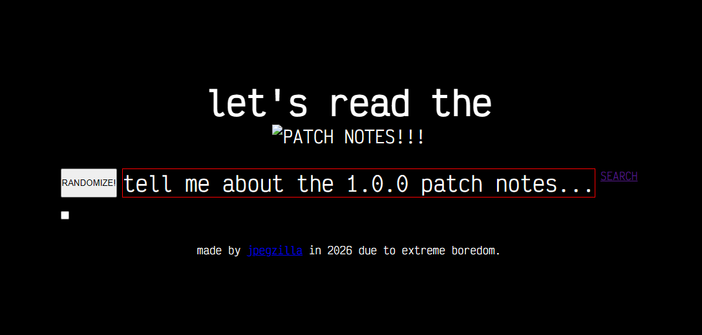
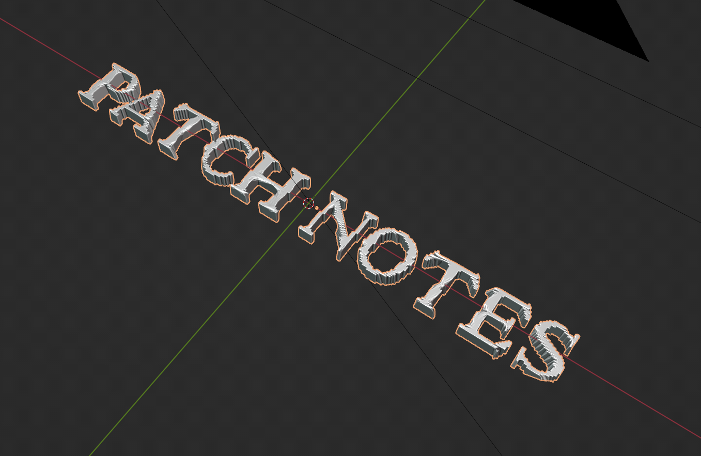
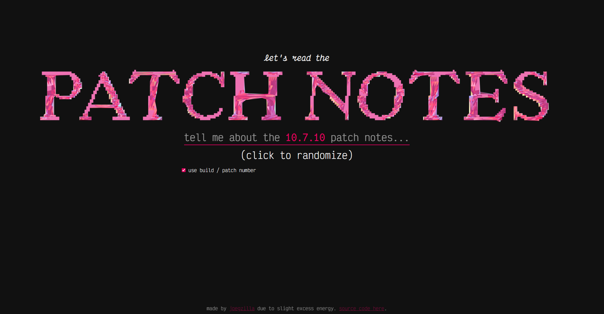
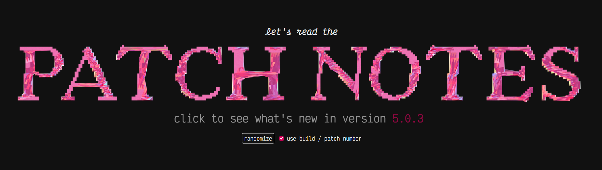
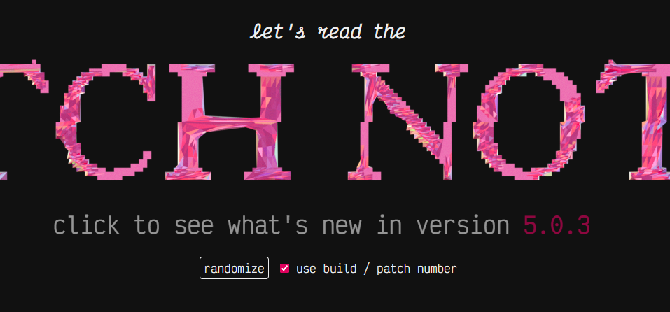
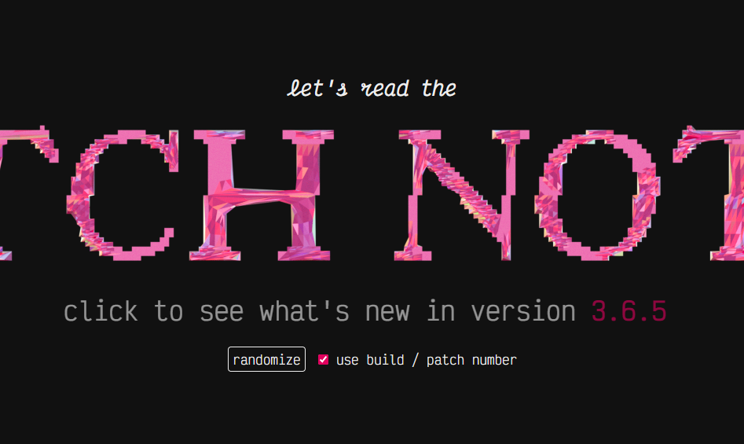
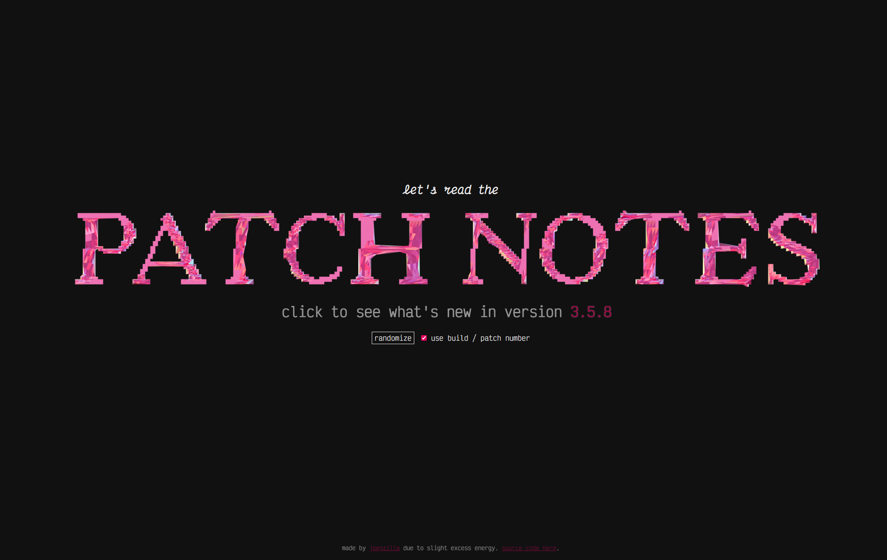

reading the patch notes.
so here we are in 2026. I'm a 27 year old hikkikomori with a bunch of mental issues, I'm not a great person, I have almost zero notable achievements under my belt, and my life is coming apart at the seams. I need to make something of myself before I collapse from heart failure or deep vein thrombosis as a shitty nobody at the age of 35.
in service of this — among myriad other things — I must try to create stuff constantly. I'm working on a game, a 3D roleplaying game that I expect to take a few years. I'm also working on an interactive fiction version of the same game that has a much smaller scope. and there are a hundred other side projects, like my youtube channel and my art blog.
additionally, sometimes I have a random idea for something I could make rather quickly. typically it'll be something silly that would only take between 2-10 hours of constant work. and also typically, I tend to put these things aside out of pure laziness. this avoidant instinct is what I will suppress.
(tl;dr? here's a thing I made)
I had an idea that it might be cool / fun to google random numbers followed by the phrase "patch notes" and see what updates come up. if I search "1.15.3 patch notes", for example, I see some warcraft patch information. most numbers yield game patch notes, but some reveal updates for various pieces of software that I've never heard of.
it's pretty cool! I like reading random patch notes! "players may now earn additional runes for the cloak slot"? I have no idea what that means, but ok! one thing I don't like about this approach is that it doesn't bring up patch notes for games / software that doesn't widely publicize their patch notes — for example, my beloved black desert usually refers to patches by their release date, despite the fact that they have numbers.
anyway, I made a little site to allow me to look up random patch notes faster. I made it a couple of days ago in like ~3 hours. it's kind of like randomarena but actually functional and MUCH better looking.
click here to read the PATCH NOTES!
I know you wanna read the PATCH NOTES! 
design iterations
this went through a lot of design iterations very, very quickly, which was a fun process for me since my current job doesn't really allow me to work on frontend stuff very often. it was SO refreshing to just sit down and bang out a layout and some styles, open up illustrator and blender and just design stuff. oh my god I need to do this more so I can retain more sanity.
iteration 1: 
iteration 2: 
iteration 3: 
iteration 4 - I made the text in blender:

then I put it into the layout: 
iteration 5: 
iteration 6: 
iteration 7: 
iteration 8: 
alright, this one was obviously thrown together, but I felt like I needed to put out a blog post for some reason. I spent like 45 minutes just messing with the vertical alignment, sizing, spacing, and responsiveness of these elements. and I LOVED it. and I will start making stuff again. gotta do it...
I will be back, I will become a better person, I will fix this, I will make something of myself and put my life in order. ∎
currently listening to:
- Salamander by ELLEGARDEN (one of my new top 100 songs)
- Supernova by ELLEGARDEN
- クソッタレ解放区 by STANCE PUNKS
- An Outward Visible Sign Of An Inward Invisible Hell by Escha (this blew my mind)
- Somersault by Neddie